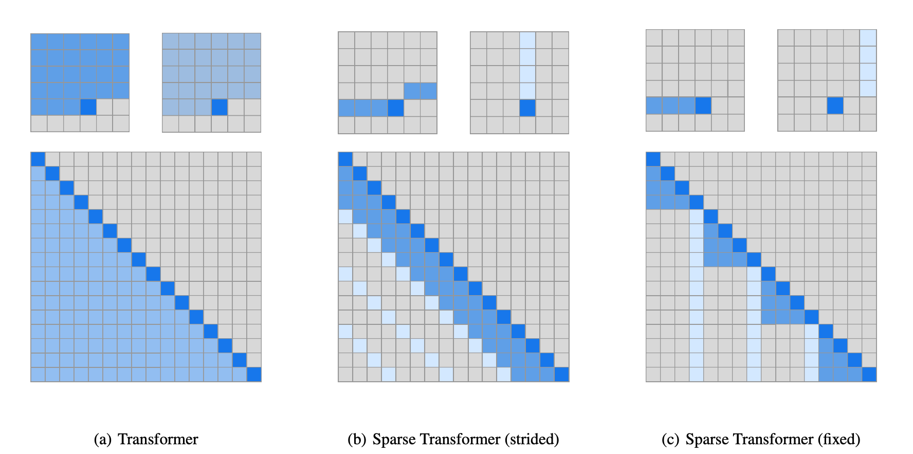

稀疏注意力#
复杂度瓶颈#
Transformer 架构的核心是缩放点积注意力 (Scaled Dot-Product Attention)：
$$o_i = \sum_{j=1}^{n} \alpha_{ij} \cdot v_j, \quad \alpha_{ij} = \operatorname{softmax}\left(\frac{q_i^T k_j}{\sqrt{d_k}}\right)_j$$
其中 $Q, K, V \in \mathbb{R}^{n \times d}$ 分别是查询、键、值矩阵。
$QK^T$ 矩阵的形状为 $n \times n$，计算复杂度 $O(n^2 d)$，空间复杂度 $O(n^2)$。对于长序列（$n=128\text{K}$，$d=4096$，FP16），仅注意力矩阵就需要 $128\text{K} \times 128\text{K} \times 2\text{B} \approx 32\text{ GB}$ 显存——单张 GPU 无法承受。
注意力矩阵的稀疏性来源于一个直觉观察：并非所有 token 对都同等重要。大多数 token 对之间的注意力权重接近零，仅有少数 token 对承载了主要的信息交互。
这种稀疏性有两层含义：
- 自然的局部性：相邻 token 之间的依赖远强于远距离 token
- 内容相关性：语义相关的 token 即使距离远也需要交互
稀疏注意力方法试图在信息完整性和计算效率之间寻找最优平衡。
